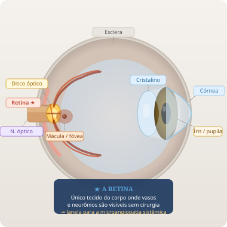
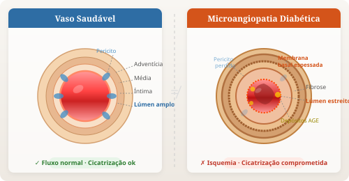
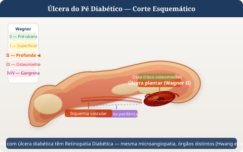

O Olho como
Janela Sistêmica
da Ferida Crônica
Como a imagem da retina revela, de forma não invasiva, a microangiopatia que impede a cicatrização — e como a oculômica pode transformar o diagnóstico e o manejo das feridas de difícil resolução.
A Conexão Visual: Olho · Vaso · Ferida

A retina compartilha origem embriológica com o SNC. Seus vasos e neurônios são visíveis sem cirurgia — janela única para processos sistêmicos silenciosos.
microangiopatia

O mesmo mecanismo de espessamento da membrana basal, perda de pericitos e depósito de AGEs ocorre nos vasos retinianos e nos vasos periféricos. Ver na retina = ver no corpo todo.
periférica

A isquemia, neuropatia e infecção que formam a tríade do pé diabético têm raiz na mesma disfunção microvascular visível na retina. Detectar cedo no olho = prevenir na perna.

"A retina é o único tecido do corpo onde microvasculatura e neurônios podem ser observados de forma não invasiva. Essa janela privilegiada revela não apenas doenças oculares crônicas, mas também processos sistêmicos silenciosos — como a microangiopatia diabética, que compromete a cicatrização e está na raiz de grande parte das feridas crônicas de difícil resolução."
— Fundamento Científico · PET-Saúde ISD · UFPel · Telemonitoramento de Feridas CrônicasSinais Retinianos → Tradução Sistêmica
-
Microaneurismas Ref.2 Primeira lesão detectável da DR. Sinalizam ruptura da barreira hemato-retiniana — mesma disfunção endotelial que impede cicatrização periférica.
-
Calibre Arteriovenoso (AVR) AVR reduzido correlaciona-se com HAS, aterosclerose e hipóxia tecidual periférica — condição central nas feridas isquêmicas.
-
Tortuosidade Vascular Ref.4 Reflete disfunção autonômica e neuropatia — associada diretamente às úlceras neuropáticas do pé diabético.
-
Exsudatos e Edema Macular Ref.2 Extravasamento de lipídeos por perda da função da barreira vascular — marcador de microangiopatia ativa e generalizada.
-
Neovascularização (PDR) Ref.1 VEGF elevado na retina proliferativa é o mesmo mediador que inibe a remodelação adequada nas feridas crônicas.
Cadeia Fisiopatológica Compartilhada
Ativa vias de sorbitol, hexosamina e PKC → produção de AGEs → estresse oxidativo em células endoteliais de retina e de membros inferiores.
Perda de pericitos, rotura da membrana basal e aumento da permeabilidade vascular — ocorre simultaneamente na retina e no tecido periférico.
Espessamento capilar → redução do fluxo → isquemia. Retina: exsudatos e hemorragias. Periférico: úlceras de difícil cicatrização.
Lesão axonal por hipóxia → perda de sensibilidade protetora → microtraumas silenciosos → ferida crônica neuropática.
TNF-α, IL-1β e VEGF elevados → fase inflamatória prolongada → ferida estagnada no tempo, sem progressão para reparação tecidual.
Tipos de Feridas Crônicas e Correlação com a Retina
Úlcera do Pé Diabético
Coexistência de microangiopatia e neuropatia. O grau de retinopatia é preditor independente de amputação — mesmos mecanismos, órgãos diferentes.
Úlcera Neuropática
Neuropatia autonômica compromete o fluxo dérmico. Tortuosidade retiniana e alterações de calibre venoso refletem disfunção neural sistêmica.
Úlcera Isquêmica / Vasculogênica
AVR reduzido na retina indica aterosclerose periférica avançada. Obstrução arteriolar na retina = obstrução arteriolar nos tecidos distais.
Protocolo Clínico Integrado: Oculômica + Feridas Crônicas
Referências
Formato ABNT NBR 6023:2018HWANG, Injung; LEE, Jong Lim; OH, Sei Joon; KWON, Oh Deog; CHUNG, Woo Sung; KIM, Chang Soo. Association between diabetic foot ulcer and diabetic retinopathy. PLoS ONE, San Francisco, v. 12, n. 4, e0175270, abr. 2017. DOI: 10.1371/journal.pone.0175270.
BOTA, Adriana Violeta; PANTEA-STOIAN, Anca; SERAFINCEANU, Cristian; NITESCU, Maria. Microvascular complications of diabetes mellitus: focus on diabetic retinopathy (DR) and diabetic foot ulcer (DFU). In: STOIAN, Anca Pantea (org.). Vascular Surgery. London: IntechOpen, 2021. cap. 4. DOI: 10.5772/intechopen.96539.
WAGNER, Siegfried K.; FU, Dun Jack; FAES, Livia; LIU, Xiaoxuan; HUEMER, Josef; KHALID, Hagar; FERRAZ, Daniel Araújo; KOROT, Edward; KELLY, Christopher J.; BALASKAS, Konstantinos; DENNISTON, Alastair K. O.; KEANE, Pearse Andrew. Insights into systemic disease through retinal imaging-based oculomics. Translational Vision Science & Technology, Rockville, v. 9, n. 2, art. 6, jan. 2020. DOI: 10.1167/tvst.9.2.6. PMC: PMC7343674.
MIRGHORBANI, Masoud; HAMZELOO-MOGHADAM, Maryam; REZAEI, Nima; AMINI, Mohammadreza; LARIJANI, Bagher. Diabetic foot ulcers: pathophysiology, immune dysregulation, and emerging therapeutic strategies. Biomedicines, Basel, v. 13, n. 5, p. 1076, abr. 2025. DOI: 10.3390/biomedicines13051076.